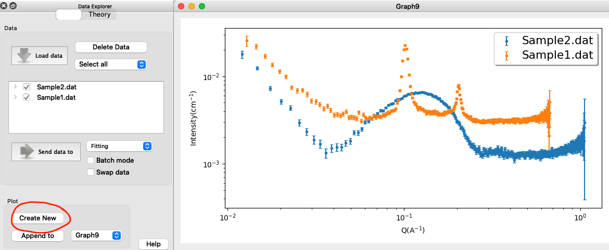
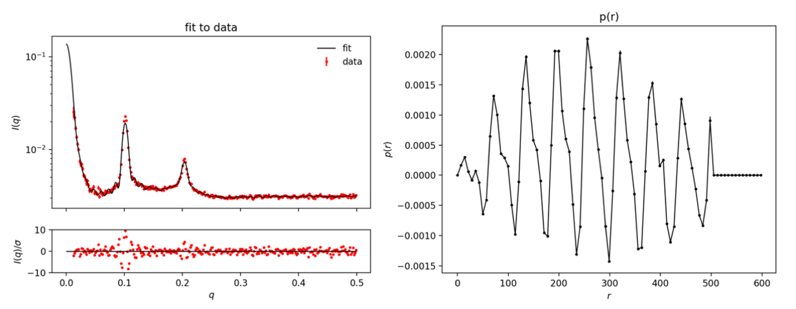

Home
Tutotial: Lamella
Tutorial contributors: Andreas Haahr Larsen, Jacob Judas Kain Kirkensgaard.
Frontpage image from Luchini and Vitiallo 2021
Before you start
- Download and install SasView (needed for Part 3 and 4)
Learning outcomes
- Understand how the scattering from lamella structures looks (unilammellar vesicles, multilamella vesicles.
- Fit lamella data in SasView, using SLD calculators and relevant form factors and structure factors.
Part 1: Visual inspection of data
You have measured two SAXS datasets: Sample1.dat, which is DPPC in H2O and Sample2.dat, which is a lecithin (lipid) extract of unknown composition, but expected to contain much PC.
Load the data into SasView and create new plot:
Comment on the differences. The samples are either unilamellar vesicles or multilamellar vesicles (see, e.g., Figure 2 in Luchini and Vitiallo 2021 ). Which is which? What do the the peaks of Sample1 represent and can you derive any structural info from their position (q-value)? (Hint)
Part 2: Fourier Tranform the data
Note: there is a separate tutorial on Fourier tranformation of small-angle scattering data, and the pair distance ditribution.
Go to: BayesApp, which is a web applicatioin for doing indirect Fourier transformation of small-angle scattering data.
Manually remove all headerlines in Sample1.dat and remove lines containing 0 in the intensity and error columns (beginning and end of the file). (or use this dataset: Sample1_clean.dat)
Upload the edited datafile to BayesApp, choose Transformation: negative (to allow for negative values of the pair distance distribution). Give an estimate for the maximum distance, e.g. 500 Å, set qmax to 0.5 Å-1, and press Submit:
Comment on the result
Do the same for Sample2 (Sample2_clean.dat)
Note: BayesApp gives an estimate of the error bars in data, as well as a rescaled dataset (Larsen and Pedersen 2021). Albeit useful, you can ignore that for now.
Part 3: Fit the data with an analytical model
Before we fit the data, we need to consider all prior knowledge. This is critical because fitting SAS data is an ambiguous inverse problem, i.e. there are several models that can fit the data.
First and foremost, we must estimate the scattering length densities (SLD) and excess scattering length density (dSLD = SLD - SLD_H2O) of POPC head and tail groups.
The molecular volumes can be determined experimentally and are 30 Å3 for H2O, 325 for DPPC head grops and 969 for DPPC tail groups. Use SasView Density/volume calculator to get the mass densities.
Use SasView SLD calculator to get the SLD values for solvent, head and tail group. (Hint, Solution)
You will use the SasView models lamellar_hg and lamellar_hg_stack_caille to fit the data.
Estimate a good initial value for length_head and lenght_tail (a typical lipid bilayer is 40-50 Å thick). Estimate a good initial value for d (see Part 2) and Nlayers (see Part 3).
Fit the data
Comments on the results. You may not get perfect fits (reduced Χ 2 is not unity) - this is ok.